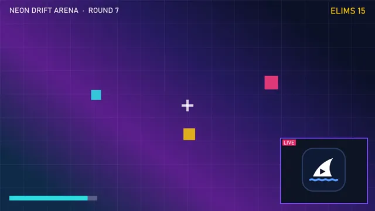

Funciona con Kicky con Twitch, YouTube o cualquier archivo de vídeo
Entra tu directo, salen clips listos para publicar.
SharkyClips encuentra los mejores momentos de la grabación de tu directo y los convierte en clips verticales para YouTube Shorts, TikTok e Instagram Reels. Todo funciona en tu propio PC.
- 100 % gratis
- Sin marca de agua
- Sin límites
- Funciona en tu PC
Resultados reales
Cada pareja muestra un momento del directo largo y el mismo momento en el clip que SharkyClips hizo con él por sí solo: recortado, pasado a 9:16, con subtítulos y un título.
 Directo · 4:39
Directo · 4:39 Clip terminado
Clip terminadoOne grenade, triple kill! What did I see? 🤯Elegido por una reacción fuerte, una explosión del chat (14 veces más mensajes) y "what the hell". Puntuación 93.  Directo · 1:11
Directo · 1:11 Clip terminado
Clip terminadoOne versus three? I pulled off a CLUTCH! 😱Remontada 1 contra 3: voz fuerte, el chat 12 veces más rápido, "no way" y "clutch". Puntuación 78. 
Directo · 5:28 Clip terminado
Clip terminadoDid that last throw really just win the game?El momento de la victoria: un breve silencio, luego gritos y "let's go". Puntuación 85.  Directo · 0:21
Directo · 0:21 Clip terminado
Clip terminadoDid you really see that double elimination happen?Doble eliminación: "oh my god", una reacción fuerte y el chat 11 veces más rápido. Puntuación 82.  Directo · 2:53
Directo · 2:53 Clip terminado
Clip terminadoZero armor, reckless run, barely alive! 😱Huida en pánico del jefe. La palabrota lleva pitido y está oculta en los subtítulos. Puntuación 64.  Directo · 3:51
Directo · 3:51 Clip terminado
Clip terminadoPracticed all week, then finally landed itUn salto practicado toda la semana: "yes!" y "LETS GOOO" en el chat. Puntuación 75.
Hecho con nuestro directo de demostración (un juego dibujado, una voz de ordenador y un chat generado), así que no aparece ninguna persona, juego ni canal real. Nada se editó a mano.
Cómo funciona
Tres pasos. SharkyClips hace la edición entre medias.
Añade tu directo
Suelta un archivo de vídeo o pega un enlace de Twitch, YouTube o Kick. SharkyClips también puede tomar la grabación más reciente de tu carpeta de OBS.
SharkyClips crea los clips
Encuentra los momentos ruidosos, divertidos y emocionantes, los corta limpiamente, añade subtítulos, pita las palabrotas y escribe los títulos.
Revisa y comparte
Mira los clips, cambia lo que quieras y compártelos en YouTube Shorts, TikTok e Instagram Reels.


Hecho para streamers
Encuentra los momentos
Reacciones fuertes, risas, explosiones del chat y eventos del juego se convierten en una lista ordenada de clips.
Pitidos, comprobados
Las palabrotas se pitan en 11 idiomas, y cada clip terminado se vuelve a escuchar.
Un botón Compartir
YouTube Shorts, TikTok e Instagram Reels, con el texto y los límites correctos para cada uno.
Ayudante de TikTokNuevo
Una pequeña extensión para Edge, Chrome, Opera y Brave rellena tu subida a TikTok. Tú la revisas y pulsas Publicar.
Presentación de fotosNuevo
Convierte de 2 a 20 fotos en un vídeo vertical de antes y después con etiquetas y música.
Temas y coloresNuevo
Cuatro temas de color para la app (Clásico, Océano, Shark Sign, Alto contraste), oscuros o claros, y tu propio color de acento.
SharkyClips frente a otros
Datos de la web oficial de cada producto, comprobados el 28 de noviembre de 2026. Precios en dólares estadounidenses, sin impuestos. Los planes cambian: revisa sus páginas antes de decidir.
| Función | SharkyClips | Eklipse | OpusClip | StreamLadder |
|---|---|---|---|---|
| Precio | Gratis (código abierto, licencia MIT) | Una prueba gratis; Premium desde 24,99 $ al mes o 179,99 $ al año | Plan gratis; planes de pago desde 15 $ al mes | Plan gratis; planes de pago desde 15 $ al mes o 150 $ al año |
| Marca de agua | Nunca | En las exportaciones gratis | En el plan gratis | Solo si un clip gratis usa funciones de pago |
| Límites de clips | Ninguno | Gratis: vista previa de los clips de un directo reciente; Premium: clips con IA sin límite | Gratis: 60 minutos de procesamiento al mes, archivos guardados 3 días | Sin límite de minutos; clips con IA de directos completos desde el plan Creator (27 $ al mes); exportación gratis en 720p |
| Dónde se procesa tu vídeo | En tu PC: no se sube nada | En línea: su edición con IA funciona en la nube | En línea: subes un archivo o pegas un enlace | En línea: subes un archivo o pegas un enlace |
| Qué necesitas | Un PC con Windows 10 u 11 y 8 GB de RAM (macOS: menos probado) | Un navegador y una cuenta | Un navegador y una cuenta | Un navegador y una cuenta |
| Detección según el juego | Lee la pantalla del juego en Delta Force y League of Legends; en otros juegos usa la voz, el sonido y el chat | Más de 3.000 juegos, ajustada a cada categoría de juego | No indicado | No indicado |
| Kick | Vídeos de Kick con su chat | Importa directos de Kick | Admite enlaces de Kick | Clips de Kick en el plan gratis; directos completos de Kick desde el plan Creator |
| Pitido de palabrotas | Automático en 11 idiomas, y cada clip se vuelve a comprobar | No indicado | Desde el plan Pro (29 $ al mes) | Censura automática de palabras (plan no indicado con claridad) |
| Idiomas | 11 (app, reconocimiento de voz y subtítulos) | No indicado para subtítulos; comandos de voz en inglés | Más de 25 para subtítulos | Más de 90 para subtítulos |
«No indicado» significa que no lo encontramos en sus páginas oficiales. ¿Algo está mal o desactualizado? Escríbenos desde la página de contacto y lo corregimos.
Fuentes (14 páginas oficiales)
- eklipse.gg
- eklipse.gg/help/how-much-does-eklipse-premium-cost
- eklipse.gg/help/what-are-the-main-differences-between-the-free-and-premium-plans
- eklipse.gg/help/will-my-exported-video-have-a-watermark
- eklipse.gg/help/import-kick-streams-to-eklipse
- eklipse.gg/features/ai-edit
- opus.pro/pricing
- help.opus.pro/docs/article/plans-and-credits.md
- help.opus.pro/docs/article/video-sources-supported.md
- help.opus.pro/docs/article/video-languages-supported.md
- streamladder.com/pricing
- streamladder.com/clipgpt/import-from-kick
- streamladder.com/clip-editor/word-censoring
- streamladder.com/clip-editor/captions
Cómo usa SharkyClips YouTube
Conectar YouTube es opcional. Si lo conectas, SharkyClips usa los Servicios de la API de YouTube oficiales solo para subir y gestionar los clips que elijas y mostrarte sus resultados. Tus datos de YouTube se quedan en tu ordenador.
Ver los permisos y cómo se usan tus datos de YouTube
Subir a YouTube es opcional. Si conectas tu canal en Ajustes → YouTube, SharkyClips usa los servicios oficiales de la API de YouTube para hacer exactamente esto, y solo cuando tú lo pides:
| Acción | Permiso (scope) | Cuándo |
|---|---|---|
| Subir un clip que preparaste (título, descripción, etiquetas, privacidad, hora de publicación, lista, miniatura); cambiar sus datos o su hora, publicarlo antes o borrarlo si lo cancelas antes de que sea público; mostrar qué canal está conectado; leer las vistas, los me gusta y el estado de privacidad de los vídeos subidos con SharkyClips | youtube | Cuando pulsas Publicar ahora o programas un clip (se sube antes mientras tu PC está encendido), lo editas o cancelas en la Biblioteca, abres Ajustes, y cada 6 horas más o menos mientras la app funciona |
| Leer el porcentaje medio de visualización de esos mismos vídeos, para saber qué estilo de inicio (gancho) retiene a tus espectadores | yt-analytics.readonly | Solo para clips subidos dentro de una prueba de ganchos, cuando llevan 48 horas públicos |
Estos datos se guardan solo en tu ordenador y solo sirven para mostrarte tus resultados y mejorar las puntuaciones de los clips para tu canal. SharkyClips no tiene servidor: los desarrolladores nunca reciben, ven ni comparten tus datos de YouTube, y nada se usa para anuncios. SharkyClips nunca lee canales de otras personas, tus comentarios, tus suscriptores ni tu historial. Solo cambia o borra vídeos subidos con SharkyClips, y solo cuando tú lo pides (por ejemplo, al editar o cancelar un clip programado).
Puedes desconectarte cuando quieras en Ajustes → YouTube (esto revoca el token de acceso en Google), o quitar el acceso en los permisos de tu cuenta de Google. Al conectar aceptas los Términos de servicio de YouTube; Google trata tus datos según la Política de privacidad de Google. Lee nuestra política de privacidad y los términos de uso completos.
Gratis, abierto, privado
SharkyClips tiene licencia MIT: sin suscripción, sin créditos, sin marca de agua. No hay cuenta ni rastreo, y tus vídeos se quedan en tu PC salvo que los compartas. El código y todas las versiones están en GitHub.